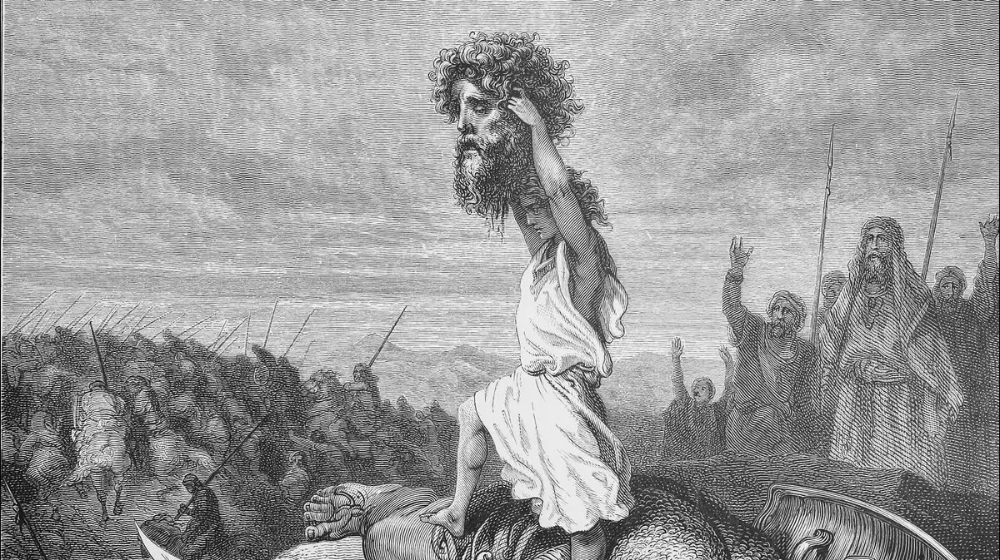

המלכות שאינה חשיבה — אלא מעשה במסירות נפש
דוד — זו המלכות, שהכל בה אחד, ואין בה כלל חשיבה שכלית — רק מעשה במסירות נפש. זה, ורק זה, עורף את ראשו של גוליית — שנותן כל היום עצות ואינו עושה מעשה.
אדם שזוכה למלכות — הוא אדם שמוסר נפשו בכל רגע, על כל מצווה, ואפילו הקטנה שבקטנות:
שם — שם עורפים את ראשו של גוליית.
כשהולכים עד הסוף — הורגים את כל העצות, את כל המחשבות, את כל הדמיונות. ובשביל זה צריך אומץ לב — ולא שכל.
ולכן: ״אַנְשֵׁי אֱמוּנָה אָבָדוּ — בָּאִים בְּכֹחַ מַעֲשֵׂיהֶם״.
שאדם אמיתי נותן הכל, ואין לו שום ספקות באמונה. כי אדם שמוכן למות — בוודאי אין לו רצון; ובהעדר הרצון, הסטרא אחרא מת ברעב.
עריפת הראש — זה לא להקשיב לכל הפנימי, להתעלם ממנו, ולהמליך את המעשה על החכמה. לא לחפש עצות איך ומה לעשות — פשוט לעשות, בלי שכל ובלי רגש.
המסירות נפש — פעם אחרי פעם — עד שההרגל הופך לטבע; ואז הטבע נעלם, ומתגלה מציאות של השגחה מעל הטבע, הנקראת הוי״ה: שהכל מתהווה מאין ליש בכל רגע — למען האדם הפועל בדרך זו.
* דברי פנימיות. מקורות: שמואל א׳ יז (דוד וגוליית; ״ויכרות בה את ראשו״) · ״אנשי אמונה אבדו״ — מן הסליחות ומנוסח ״באים בכח מעשיהם״ · מלכות, ביטול הרצון וגילוי ההשגחה שמעל הטבע — על דרך החסידות. הלימוד למעשה — בהדרכת רב.